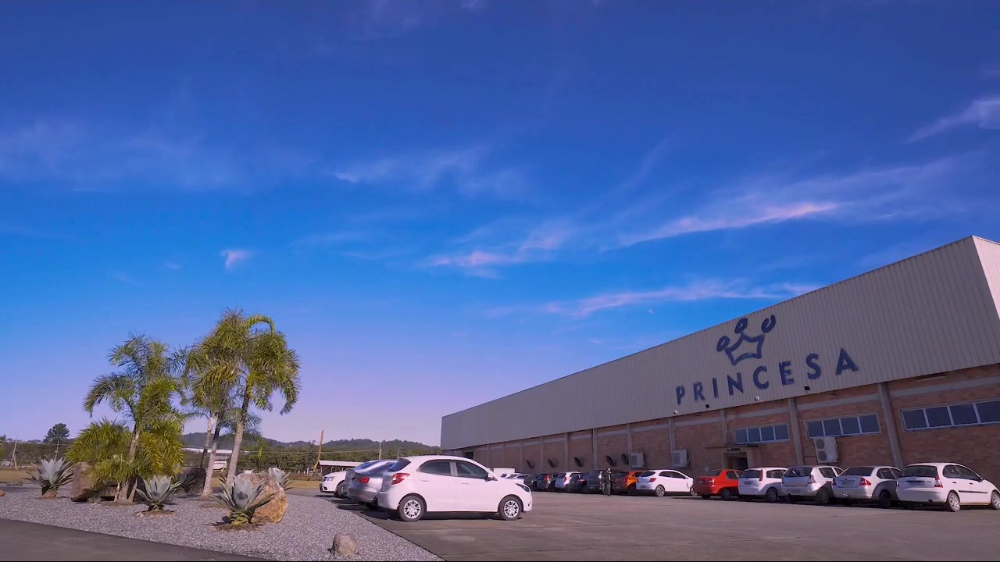
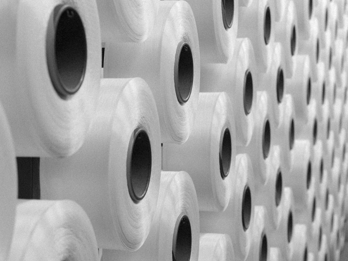

Tecendo histórias desde 1951
Moda que inspiramovimento.
O seu próximo projeto começa com o tecido certo. Criamos malhas, rendas e tules para marcas de moda íntima, esportiva e praia.
Conhecer os tecidosTecendo histórias desde 1951
O seu próximo projeto começa com o tecido certo. Criamos malhas, rendas e tules para marcas de moda íntima, esportiva e praia.
Conhecer os tecidos
Joinville · SC · Brasil
Da nossa história em Joinville às coleções de todo o Brasil. Conhecimento, tecnologia e cuidado em cada etapa.
Conheça a PrincesaO QUE TECEMOS
Da elasticidade das malhas à delicadeza das rendas, desenvolvemos tecidos que dão forma às suas coleções.
Malhas lisas, listradas e com efeitos de desenho. Diferentes gramaturas para unir conforto, elasticidade e performance.
Converse sobre este tecido
02Fios entrelaçados por urdume para combinar resistência e delicadeza em tecidos de compressão e linhas sem costura.
Converse sobre este tecidoTexturas, transparências e desenhos que valorizam os detalhes. Cuidado especial do primeiro fio à peça final.
Converse sobre este tecido